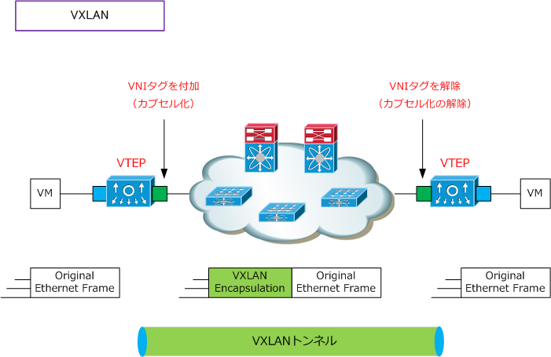
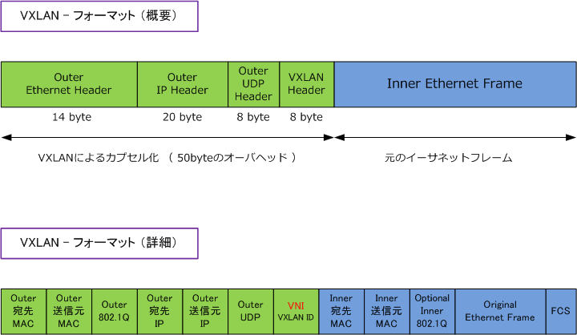
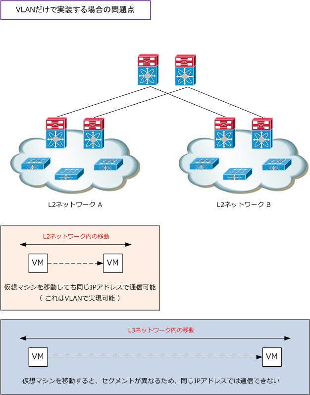
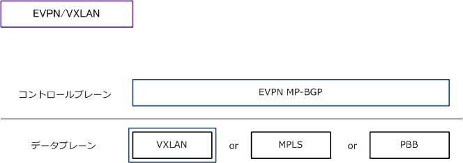

VXLAN
VXLANとは
VXLAN（Virtual eXtensible Local Area Network）とは、L3ネットワーク上に論理的なL2ネットワークを 構築するトンネリングプロトコルのことです。VXLANでは、VNI（VXLAN ID）でイーサネットフレームを カプセル化することでトンネリングを実現しています。2014/8 にIETF RFC7348として公開されています。
VLANでは最大で約4000のネットワークしか構成できず、大規模ネットワークでは不足することがあります。 VXLANでは24ビットのVNI（VXLAN ID）で、最大で約1600万のネットワークを構成することができます。 VXLANにより、大規模な複数のデータセンターにまたがった仮想データセンターを構築することができます。

VTEP（ VXLAN Tunnel End Point ）とは、トラフィックがVXLANトンネルに出入りするループバックの インターフェースまたは仮想インターフェースのことですが、VXLANパケットを送受信できるVXLAN対応 スイッチのことを指している場合もあります。
送信側VTEPでイーサネットフレームに VNI（VXLAN Network Identifier）と呼ばれる論理ネットワーク を識別するためのIDを付加した上でイーサネットフレームをVXLANパケットにカプセル化します。そして、 L3ネットワークを介して宛先となる転送先のVTEP（ リモートVTEP ）へ転送します。受信したVTEPでは、 VXLANによるカプセル化を解除し、宛先となるデバイスへオリジナルのイーサネットフレームを転送します。
VXLANパケットのフォーマット
VXLANではイーサネットフレームをUDP/IPでカプセル化しますが、そのフォーマットは下図のとおりです。

VXLANを実装するメリット
VXLANを使用せずとも、Layer3で分割して大規模なインフラを構築すればよいではないかと思われるかも しれませんが、例えば、仮想マシンのLayer3越えの移動の際に制約が発生する問題点があります。要件的に 仮想マシン（VM）のリソースを配置、稼働させる場合に下図のような制約を発生させてはいけない事が多い。

上図の問題点は、VXLANを実装してL2ネットワーク「A」と「B」を1つの大規模なL2ネットワークにする ことで解決します。VXLANでは送信元側でイーサネットフレームにVNI（VXLAN ID）を付加しUDP/IPで カプセル化することで、仮想マシン（VM）は Layer3 ネットワークを超えて移動が可能なようになります。
EVPN/VXLANとは
EVPN/VXLANは、L3ネットワーク上にオーバーレイでL2ネットワークを構築するためのL2VPN技術です。 EVPN/VXLANは、コントロールプレーンとデータプレーンにより構成されます。コントロールプレーンを 担うEVPN（Ethernet VPN）は管理プロトコルにBGPを使用してテナントごとのMAC/IP情報を取り交わし データプレーンを担うVXLANでは、マルチテナント環境の拡張性のあるカプセリングプロトコルとして、 L3ファブリックのネットワーク上にオーバーレイでL2ネットワークを提供します。

EVPN/VXLANでは、拡張性に優れて効率的であるだけでなく、ループフリーなL2ネットワークの展開や ネットワーク帯域幅を完全に活用したアクティブ/アクティブ型の冗長リンクなども実現できることから データセンターなどの大規模ネットワークで実装することで大きなメリットが得られます。
メリット1：拡張性に優れて効率的な大規模なL2ネットワークの展開 メリット2：アクティブ/アクティブ型の冗長リンク（オールアクティブ マルチホーミング） メリット3：BUMトラフィックの抑制（ブロードキャスト、不明なユニキャスト、マルチキャストの抑制）
BUMは Broadcast、Unknown Unicast（宛先MACアドレスが未学習のユニキャスト）、Multicast の総称です。未知の宛先へのフレームはフラッディングの対象となります。EVPNでMACアドレスを事前に学習できれば、その発生を抑えられます。
BUMトラフィックの抑制の一例として、EVPN/VXLANでは、VTEPはMP-BGPを使用してリモートVTEPの IPアドレスとVNI情報を事前に学習するだけでなく、リモートVTEPに接続されたサーバのMACアドレスも 事前に学習するようになります。以上のことから、BUMトラフィックのうち、ARPリクエストのフレームの フラッディングの発生を低減することができます。その他のメリットとして、各VPNはEVIにより区別され、 IP-VPNのようなL2VPNを構築でき運用しやすいメリットもあります。ES、ESI、EVIの用語説明は以下です。
| EVPNの用語 | 説明 |
|---|---|
| ES （Ethernet Segment） |
イーサネットセグメントはマルチホームデバイスに接続する一連のイーサネットリンクのこと。 マルチホームデバイスまたはネットワークが、2つ以上のPEにイーサネットリンクを通じて接続 されている場合にイーサネットセグメントと言う。このESを識別する値をESIという。 |
| ESI （Ethernet Segment ID） |
イーサネットセグメント識別子。ESIはEVPNでネットワーク全体にわたりイーサネットセグメントを 一意に表す識別子。EVPNを適用した場合、VTEPはMP-BGPを使用して自身に接続されたデバイスを 識別するESIを交換できるようになる。同じESIを設定した論理インターフェースを持つ複数のVTEPは 接続機器とリンクアグリゲーションできるようになる。 |
| EVI （ EVPN Instance ） |
EVPNインスタンス。EVIはPEルータ上のVPNを表す。EVIはIP-VPNルーティングとVRFと同じ役割 を果たし、import/export の RT（ルートターゲット）が割り当てられる。 |
← 仮想化とは